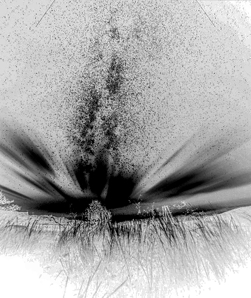

O Despertar
Seu corpo já não podia suprir o que necessitava, tampouco sua mente poderia ter suportado tamanho sofrimento,
ele viveu cada morte, viveu o curto tempo de vida restante daquele que foi capturado e sentiu cada tortura,
cada experimento que fizeram com ele, até ser dali desligado. Também acompanhou aquele que conseguiu fugir,
o terceiro e tomou conhecimento da Magika, aquele conhecimento que lhe fora despertado pelo líder da tribo
e que agora chegava nele.
Nesse momento ele morreu
Silencio
Paz
Alivio
Essas sensações se foram, as centenas de vidas compartilhadas em sua mente também. Deram lugar a milhões, trilhões,
incontáveis vidas. Mas dessa vez era de um só ser, dele.
Podia ver todas as infinitas possibilidades que sua existência tem, infinitos universos em que era historiador,
outros infinitos em que era cozinheiro... tamanha imensidão, isso era tão raso, era como olhar para o horizonte
e pensar que aquela ilusão de ótica era infinito, aquilo não importava, ínfimas mudanças de um "universo"
para o outro e em cada universo ele não deixava de ser um desprezível grão.
Ele sabia que poderia passar o resto de seu tempo olhando para aquelas possibilidades, sabia que definharia feliz
com aquele destino.
Mas não poderia ser "só" aquilo, antes de morrer teve acesso a algo que o terceiro sabia, o que era? Mágica,
não, não era bem isso.
MagiKa
Em consonância com o que estava no âmago do seu ser, Magika era algo real, e um elemento primordial da humanidade,
mas porque ele não conseguia ver qualquer coisa relacionado com ela naqueles infinitos universos? Ele tinha
que mudar seu foco, tinha que buscar algo além. Mas o que? Já estava olhando para o infinito, há algo além
do infinito?
O HORIZONTE É FALSO, ESQUEÇA-O!
11 pontos brilharam, cada um único em sua existência. Enquanto os outros se ramificavam em infinitas possibilidades,
esses tinham apenas uma história, do início ao fim, sem ramificações, sem alternativas. Seriam 11 Teohuas?
Não, não os Teohuas sozinhos são infinitos, aqueles ali eram
Kushim e um deles também era Teohua.
Apesar de ver/sentir cada um dos 11, ele não conseguia saber o que sabiam ou vivenciar o que viveram, apenas
que eram encarnações passadas e futuros de Kushim, cada uma de uma tradição e uma separada, uma tecnocrata.
Todas ligadas por um ideal.
Naquele momento sabia que tinha uma escolha, emanava dos 11 tristeza, decepção e solidão, aquele era um caminho
árduo. Rodeando-os estava um oceano de possibilidades, vidas em que poderia ser feliz, ter tudo o que desejava.
Teohua escolheu ser um dos 11.

O Mago
Após despertar, Teohua acordou. E ao seu lado estava Sebastián. Um Verbena que o ajudara naquela jornada.
-Estava lhe acompanhando, filho. Sua jornada foi mais longa do que esperava, passaram-se dias após a sua primeira
morte.
Por mais não crível que aquilo soasse, após aquela viagem, poucas coisas me surpreenderiam.
-Pude lhe acompanhar, enquanto você via o seu universo. Mas duas coisas pareciam propositalmente vazias, o nome
do seu avatar e algo relacionado a motivação dele. É algo que devamos nos preocupar?
Demorei um pouco para responder aquela, na verdade buscando a resposta. Falei: Não sei lhe informar, senhor.
Na minha mente essa parte ainda está branca.
Estava sim branca, mas sobre um fundo negro.
Teohua e Sebastián passaram mais algum tempo ali na boca da caverna, comeram e beberam, pouco falaram. Teohua
não viu sentido em voltar para casa, ele havia feito uma escolha e faria todo o possível para galga-la.